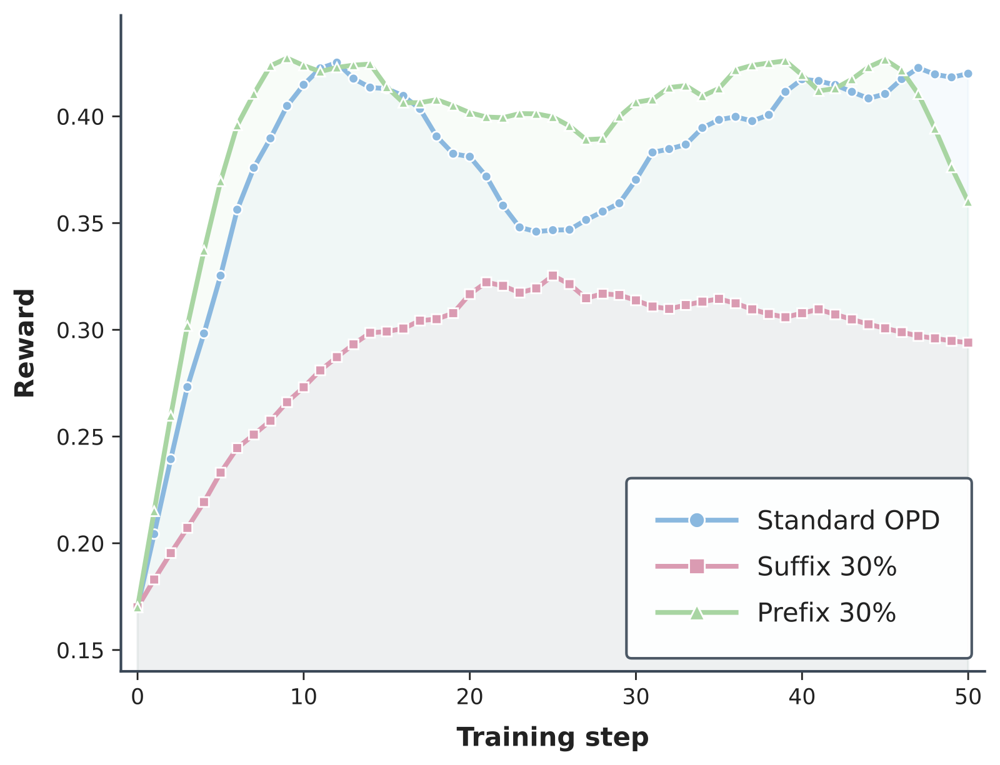
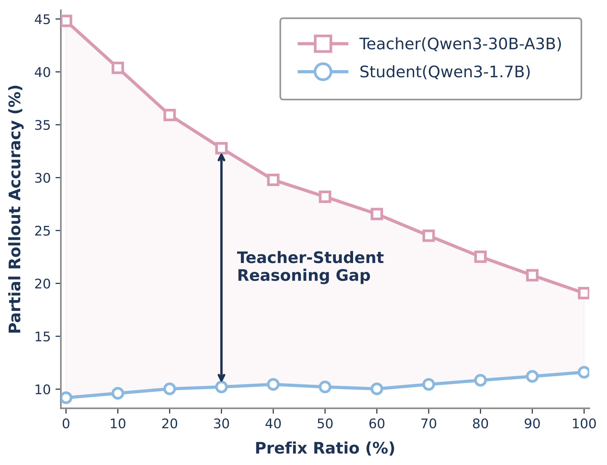
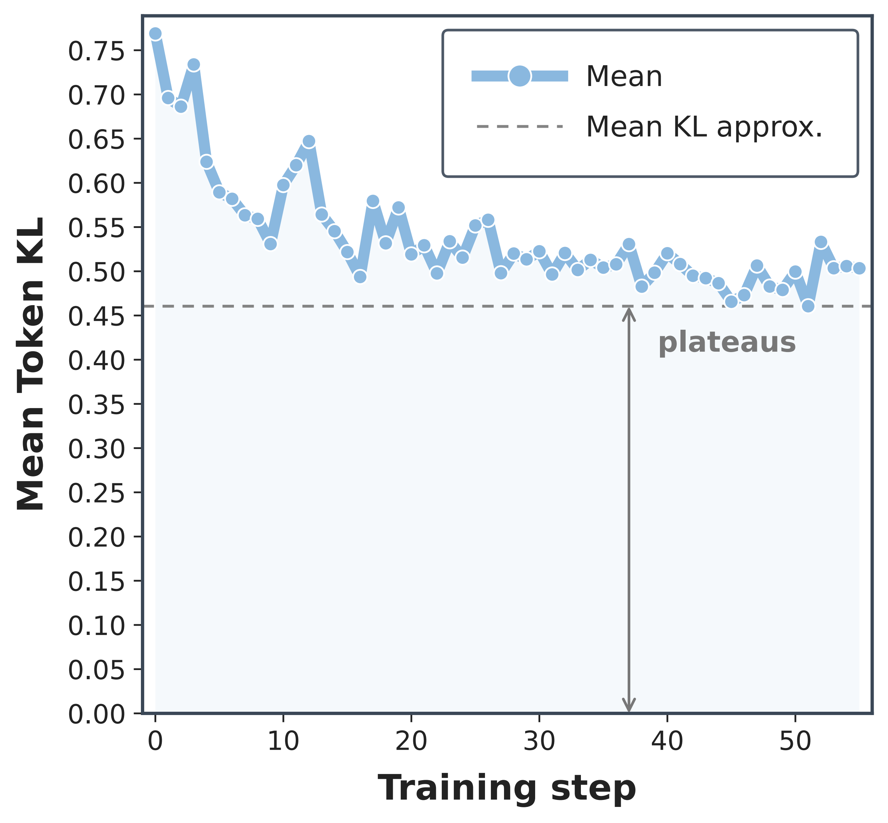
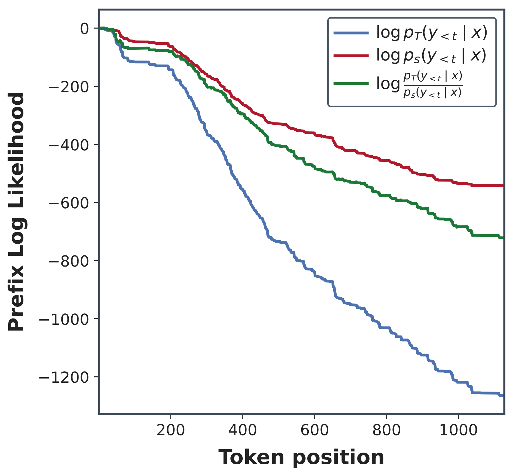
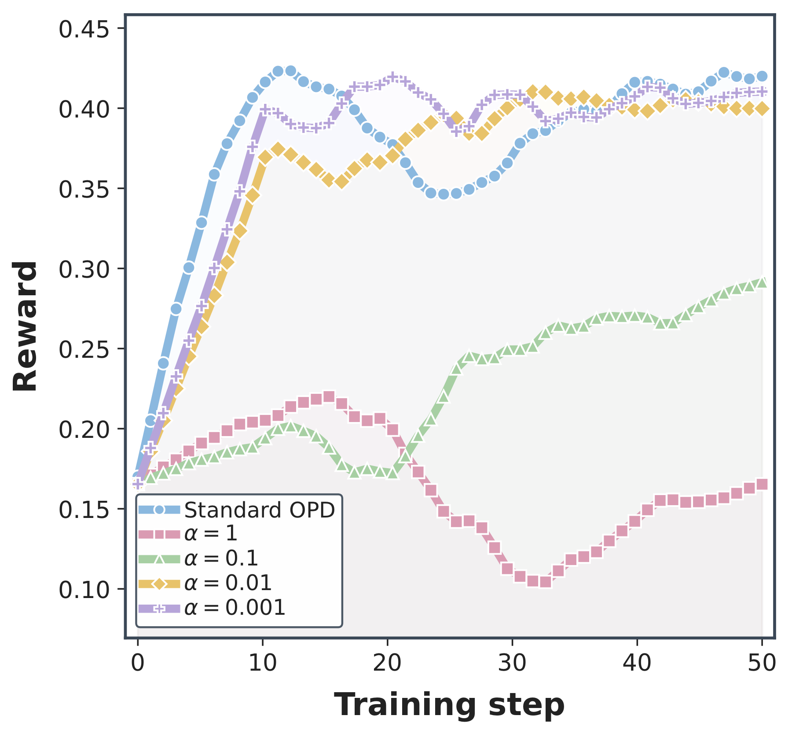
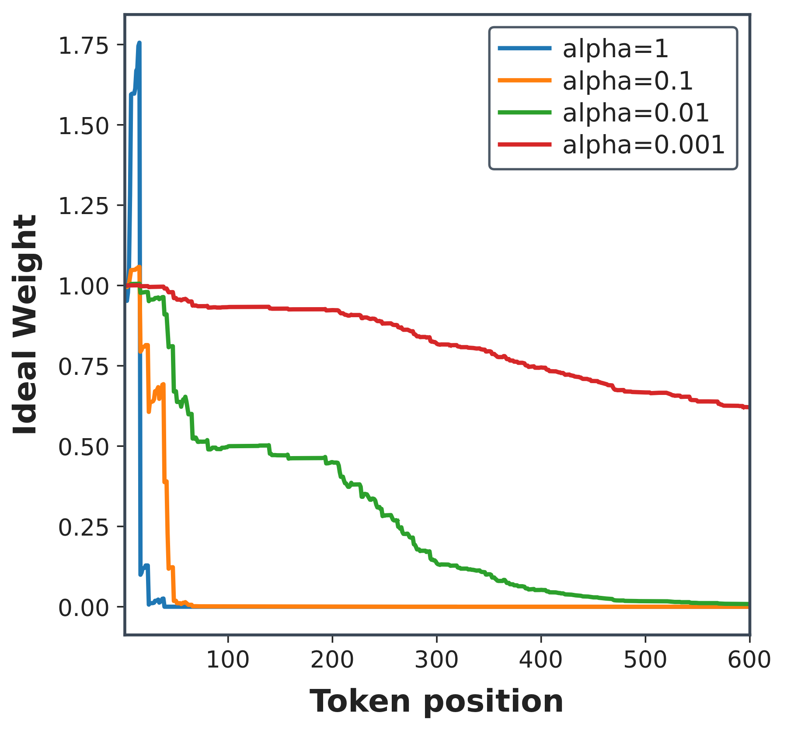
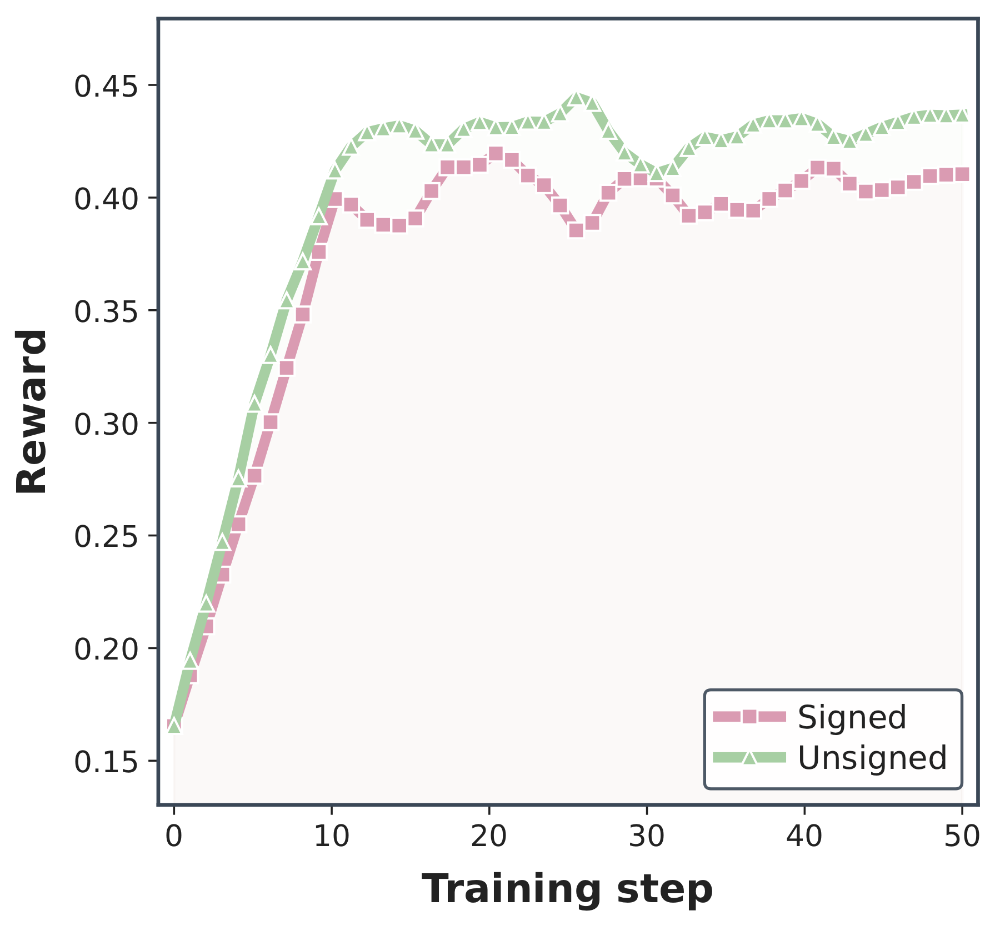
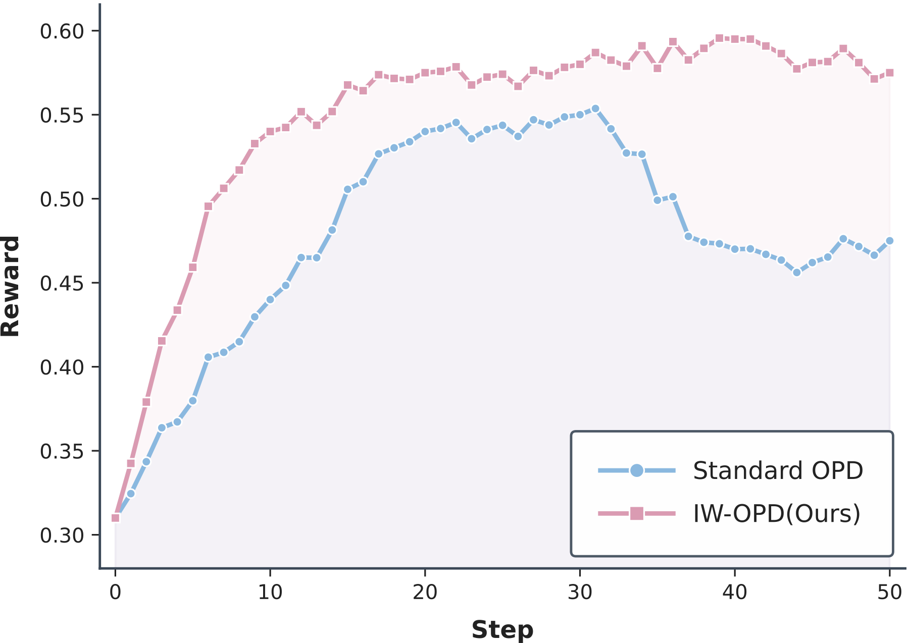
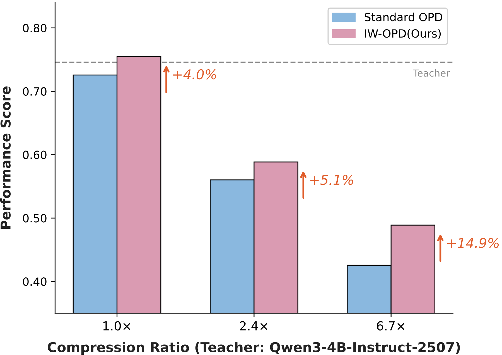

On-policy distillation (OPD) is attractive since it combines two useful ingredients: the student trains on its own rollouts, and the teacher gives dense token-level feedback on those rollouts. This is why OPD has become a natural alternative to sparse reward-only reinforcement learning for post-training language models.
In our work, we study a less obvious question: once we have dense teacher feedback, where in the response is that feedback actually useful? OPD does not only depend on how many student rollouts we collect. It also depends on whether the teacher signal lands on positions where it can still guide the student toward better reasoning.
We find a strong position effect. Early tokens in student rollouts often carry much more useful supervision than late tokens. As the student continues generating, its prefix can drift away from the teacher's high-probability reasoning region. The teacher is still queried, but it is now asked to score tokens under a prefix it may not have produced. Dense supervision is therefore not automatically equally useful supervision.
We call this position bias in OPD. For further diagnose, we conduct controlled studies, and find two interesting phenomena: (1)Early-token supervision drives OPD performance; (2)Teacher-student gap largely persists after OPD training.
To understand this phenomenon, we revisit OPD through the lens of constrained optimization. Then we derive the optimal policy under that constraint, and use that optimum to explain why teacher-compatible prefixes should receive more weight. IW-OPD is designed from this principle: keep the dense token-level OPD signal, but add more emphasis to prefixes that still look teacher-compatible.
Where supervision is spent
Let $\pi_\theta$ be the student and $\pi_T$ be the teacher. For a prompt $x$ and a student-sampled response $y = (y_1,\ldots,y_T)$, standard OPD minimizes a reverse-KL style objective on the student's own rollout distribution:
In the policy-gradient implementation, this gives a token-local advantage:
OPD gives a token-level loss on every sampled response token, a natural implementation averages those losses uniformly. That is simple, but it assumes the teacher signal is equally useful across positions. Before introducing a weighting rule, we ask a more basic empirical question: if we train on different parts of the same student response, do we get the same effect?
Reweighting is a common response when training examples are not equally informative. Off-policy imitation can suffer from exposure bias and distribution mismatch, motivating methods such as scheduled sampling and DAgger. Classical knowledge distillation and sequence-level distillation study how to transfer teacher behavior, while OPD methods such as GKD, MiniLLM, and practical OPD recipes such as the Thinking Machines Lab post supervise student-visited states. Token-selective and curriculum distillation work, including token-level adaptive training, token-wise curriculum learning, and recent selective KD variants, asks which examples or tokens should receive more weight. Our question is narrower: in on-policy distillation for long autoregressive reasoning, do positions inside the student's own rollout differ enough that uniform token weighting becomes a problem?
Position bias
We started with a simple intervention: train OPD variants using tokens from different parts of the response, while keeping the model, data, and training setup fixed.
Prefix-30 applies OPD only to the first 30% of response tokens. Suffix-30 applies OPD only to the last 30%. Standard OPD uses all valid response tokens. This experiment is deliberately crude; its purpose is to test whether position alone has a measurable effect.

The result reveals a position-dependent effect in OPD. Early and late tokens are not interchangeable: they are sampled under different prefix distributions, and training on them can lead to different outcomes. We call this phenomenon position bias.
The result is not just "early tokens are always better." A better interpretation is that early tokens are more likely to be scored under prefixes where the teacher's distribution is still meaningful for improving the student's reasoning path. Later tokens are conditioned on everything the student has already done. If the student has already left the teacher-compatible region, the suffix may be locally predictable but globally less useful for correcting the earlier drift. This connects loosely to recent analyses of reasoning updates that find some tokens or positions have disproportionate influence, such as work on high-entropy forking tokens, critical-token training, and separating reasoning tokens from boilerplate tokens.
The next question is why this position effect appears. The following diagnostics probe whether later positions are simply later, or whether they are conditioned on prefixes that have become less compatible with the teacher.
Diagnostics behind the bias
The first diagnostic asks whether a strong teacher can still recover from a student prefix. We condition both models on prefixes generated by the student, then measure the probability of eventually reaching the correct answer. This does not directly train a model; it probes whether the prefix remains a useful state for teacher guidance.

This plot is central to our interpretation. OPD queries the teacher on the student's prefixes, not on the teacher's own ideal prefixes. Early in the response, the teacher often still recognizes a path to a correct solution. Later, after the student has made enough local choices, the same teacher is asked to continue from a context that may encode a different plan. The supervision is still dense, but it is less aligned with the correction we would like the update to make.
The second diagnostic looks at the teacher-student KL during OPD training. If the teacher-student KL could be reduced to a sufficiently low value, OPD training itself could gradually repair the prefix-shift problem: later student prefixes would become more teacher-compatible as training proceeds. The diagnostic therefore tests whether OPD can actually repair this mismatch on its own. If OPD were simply moving the student all the way to the teacher distribution, we would expect the KL to keep shrinking toward zero. Instead, the mean KL falls early and then plateaus.

That plateau suggests OPD is better viewed as a local policy update than as unconstrained teacher matching. This matters for position bias: when the update can only move the student a limited distance, different token positions can have different leverage.
The third diagnostic checks whether the residual mismatch is confined to a small part of the response. It is not. Token-level KL remains nonzero across broad relative positions even after training.

The final diagnostic visualizes prefix likelihood. Along a student-sampled rollout, the prefix remains relatively natural under the student by construction. Under the teacher, the same prefix likelihood can fall much faster. This is the distributional version of the continuation result above.

Taken together, these diagnostics show why position bias matters for distillation quality. We do not merely have noisy supervision at random positions. We have a structured mismatch: later tokens are more likely to be conditioned on prefixes that are less compatible with the teacher, while uniform OPD continues to spend the same nominal token weight on them.
A finite-budget view
The diagnostics motivate a finite-budget view, which we use as an analytical tool for explaining the observed position bias. Instead of asking what distribution would match the teacher if the student could move anywhere, we ask what distribution is closest to the teacher while staying inside a small KL ball around the current student.
Here $\rho$ is the effective local update budget. This view is related to trust-region and proximal policy optimization ideas such as TRPO and PPO: a single update can improve the policy, but it cannot arbitrarily replace the student's distribution with the teacher's distribution.
In the nontrivial regime, the teacher lies outside the student's local KL ball. Under common support, the constrained optimum has a closed form:
The optimal solution under this constraint provides an explanation for the observed position bias. The best locally reachable target is not the teacher itself. It is the student distribution tilted toward trajectories that are more likely under the teacher. The tilt is exactly a teacher-to-student likelihood ratio.
From projection to IW-OPD
The local projection identifies the reachable teacher-aligned distribution $q_\theta^\star$. But the data we actually observe during OPD is sampled from $\pi_\theta$, the current student. This mismatch is exactly where importance weighting enters. Similar distribution-correction ideas appear in policy optimization and preference optimization work such as GSPO and DPO, although our use here is specifically a prefix-level allocation rule for OPD.
OPD can only optimize within a local region around the current student policy. Under the constrained-optimization view, the best policy OPD can attain is $q_\theta^\star$, which reweights the base student policy $\pi_\theta$ using the teacher-student gap measured by the likelihood ratio. From the earlier analysis, only tokens with relatively high likelihood ratios provide meaningful OPD learning signals, since other tokens have very low probability of being sampled. Motivated by this, we directly optimize the divergence between $q_\theta^\star$ and the teacher, emphasizing high-probability, teacher-compatible samples:
Since the projection stays on the boundary of the local KL ball, we can decompose this objective as a fixed local-budget term plus an expectation under $q_\theta^\star$. This is the three-line step that turns the finite-budget view into an importance-weighted objective:
The problem is that we do not sample from $q_\theta^\star$ during OPD. We sample from $\pi_\theta$. A change of measure rewrites the expectation with importance weights. At the trajectory level, the main-paper likelihood ratio is $r_\theta(y)=\pi_T(y)/\pi_\theta(y)$, and the density ratio induced by the projected target is:
For token-level OPD, the causal object is the prefix. The corresponding normalized prefix ratio is:
This gives a token-level objective over rollouts sampled from $\pi_\theta$:
Its semi-gradient has the same policy-gradient form as OPD, but with an importance-weighted advantage:
This is why the OPD advantage reappears in IW-OPD. The derivation does not introduce a new token loss; it changes the coefficient multiplying the usual OPD policy-gradient signal. Intuitively, uniform OPD treats the observed student distribution as if it were the desired local target. IW-OPD asks how to correct the observed distribution toward the locally reachable teacher-aligned distribution. Prefixes with high teacher-to-student likelihood ratio get more weight; prefixes that have accumulated teacher-student drift get less.
The practical surrogate
The exact correction is not what we use directly. There are several practical obstacles: prefix probabilities multiply over long sequences, $\alpha$ is tied to the effective update budget, the normalizer $Z_{\alpha,t}$ is an expectation over student prefixes, and signed log-probability gaps can cancel. We therefore keep the importance-weighting principle but replace the exact ratio with a stable proxy.
We designed the practical weight to preserve the ordering suggested by the derivation while avoiding the instability of the raw likelihood ratio. The first question is whether we can simply use the raw prefix ratio with a tuned exponent $\alpha$.

The second question is what those raw weights look like along a rollout. The visualization below shows the desired broad pattern: earlier tokens usually receive higher prefix weight and later tokens are down-weighted. But it also shows sharp concentration and local rebounds.

To avoid signed cancellation, we measure accumulated mismatch with an unsigned token-wise gap. We compute the OPD token gap, take its absolute value, and normalize the cumulative sum within the rollout:
This cumulative-share weight is not an exact density-ratio estimator. It is a conservative prefix-compatibility proxy. Small accumulated mismatch means the prefix has stayed relatively compatible with the teacher; large accumulated mismatch means the rollout has passed through many teacher-student disagreements.

Finally, we use this score as an extra-budget multiplier on top of standard OPD:
The intuitive form is simple: a prefix with little accumulated teacher-student disagreement receives a larger multiplier, while a prefix that has already accumulated many disagreements falls back closer to standard OPD. This design choice is important. IW-OPD does not remove dense supervision from later tokens. It keeps standard OPD as a floor, detaches the weights, and allocates additional gradient budget to more compatible prefixes. In our main experiments we use $\gamma=0.5$, and $\gamma=0$ exactly recovers standard OPD.
Implementation sketch
- Sample prompts and generate student rollouts on-policy.
- Evaluate student and teacher log probabilities on the sampled response tokens.
- Compute the standard OPD advantage from the teacher-student log-probability gap.
- Compute cumulative unsigned prefix discrepancy and convert it to $w_t$.
- Train with the same clipped PPO-style objective, replacing $A_t^{\mathrm{OPD}}$ with $A_t^{\mathrm{IW\text{-}OPD}}$.
delta_t = abs(logprob_teacher_t - logprob_student_t)
prefix_share_t = cumsum(delta_t) / (sum(delta_t) + eps)
w_t = 1 - prefix_share_t
advantage_t = stop_gradient(1 + gamma * w_t) * opd_advantage_tThe method requires no additional teacher evaluations beyond standard OPD. It changes the allocation of an already-computed signal.
Experiments
We evaluate IW-OPD across same-family and cross-scale distillation. Students are Qwen3-4B, Qwen3-1.7B, and Qwen3-0.6B. Teachers include Qwen3-4B-Instruct-2507 for a larger-overlap setting and Qwen3-30B-A3B-Instruct-2507 for a smaller-overlap setting. We also report a Qwen3-235B-A22B to Qwen3-30B-A3B experiment.
Training uses DeepMath problems filtered to difficulty at least 6, about 57K prompts, and Eurus-RL-Code, about 25K prompts. Math is evaluated on AIME 2024, AIME 2025, and HMMT 2025 with mean@32 accuracy. Code is evaluated on HumanEval+ and MBPP+. Comparisons are averaged over three random seeds.
Step-10 results
The step-10 checkpoints test sample efficiency: given the same training setup and early update budget, does reweighting make better use of the teacher signal? In both teacher regimes, IW-OPD is ahead of standard OPD at step 10 for every student scale.
| Teacher | Student | OPD$_{10}$ AIME25 | IW-OPD$_{10}$ AIME25 | Delta | OPD$_{10}$ Avg | IW-OPD$_{10}$ Avg | Delta |
|---|---|---|---|---|---|---|---|
| Qwen3-30B-A3B | Qwen3-4B | 42.4 | 49.3 | +6.9 | 52.0 | 55.5 | +3.5 |
| Qwen3-30B-A3B | Qwen3-1.7B | 20.2 | 23.2 | +3.0 | 34.1 | 36.4 | +2.3 |
| Qwen3-30B-A3B | Qwen3-0.6B | 14.1 | 15.8 | +1.7 | 15.4 | 17.4 | +2.0 |
| Qwen3-4B | Qwen3-4B | 45.7 | 46.7 | +1.0 | 54.0 | 55.1 | +1.2 |
| Qwen3-4B | Qwen3-1.7B | 24.7 | 25.9 | +1.2 | 36.8 | 38.1 | +1.3 |
| Qwen3-4B | Qwen3-0.6B | 17.1 | 19.0 | +1.9 | 17.7 | 19.8 | +2.2 |
The largest early gain is in the Qwen3-30B-A3B to Qwen3-4B setting, where AIME25 improves by 6.9 points at step 10. We interpret this as evidence that IW-OPD changes learning efficiency, not only the final checkpoint. The result is still bounded by the tested model families and tasks; it does not imply a universal step-count reduction.


Qwen3-30B-A3B teacher
The 30B-A3B teacher is the smaller-overlap regime in our main experiments. Here the student more often leaves the teacher-compatible region, so prefix weighting should be useful if the finite-budget explanation is correct.
| Student | Method | AIME24 | AIME25 | HMMT25 | HE+ | MBPP+ | Avg |
|---|---|---|---|---|---|---|---|
| Qwen3-4B | OPD | 55.3 | 48.0 | 27.1 | 77.2 | 69.1 | 55.3 |
| Qwen3-4B | IW-OPD | 57.5 (+2.2) | 49.7 (+1.7) | 28.7 (+1.6) | 78.7 (+1.5) | 70.9 (+1.8) | 57.1 (+1.8) |
| Qwen3-1.7B | OPD | 34.6 | 28.7 | 15.5 | 64.6 | 53.7 | 39.4 |
| Qwen3-1.7B | IW-OPD | 35.5 (+0.9) | 29.5 (+0.8) | 16.4 (+0.9) | 65.2 (+0.6) | 55.0 (+1.3) | 40.3 (+0.9) |
| Qwen3-0.6B | OPD | 11.0 | 17.8 | 7.1 | 29.6 | 28.7 | 18.8 |
| Qwen3-0.6B | IW-OPD | 11.5 (+0.5) | 19.3 (+1.5) | 8.0 (+0.9) | 32.5 (+2.9) | 31.9 (+3.2) | 20.2 (+1.4) |
IW-OPD improves the final average for all three students in this regime. The gains are not identical across scales, which is consistent with our view that the relevant variable is effective prefix overlap, not model size alone.
Qwen3-4B teacher
The 4B teacher setting has larger student-teacher overlap. This is a useful check because, if IW-OPD only worked when the student was very far from the teacher, the gains might disappear here. They become smaller in some cases, but they remain positive across the reported students.
| Student | Method | AIME24 | AIME25 | HMMT25 | HE+ | MBPP+ | Avg |
|---|---|---|---|---|---|---|---|
| Qwen3-4B | OPD | 56.5 | 46.3 | 24.4 | 76.3 | 67.8 | 54.3 |
| Qwen3-4B | IW-OPD | 58.7 (+2.2) | 46.7 (+0.4) | 25.0 (+0.6) | 77.9 (+1.6) | 68.2 (+0.4) | 55.3 (+1.0) |
| Qwen3-1.7B | OPD | 34.0 | 26.4 | 13.7 | 61.5 | 53.7 | 37.9 |
| Qwen3-1.7B | IW-OPD | 35.2 (+1.2) | 27.1 (+0.7) | 15.3 (+1.6) | 62.8 (+1.3) | 54.9 (+1.2) | 39.1 (+1.1) |
| Qwen3-0.6B | OPD | 11.8 | 17.1 | 2.8 | 29.8 | 33.3 | 19.2 |
| Qwen3-0.6B | IW-OPD | 13.6 (+1.8) | 19.0 (+1.9) | 6.1 (+3.3) | 31.6 (+1.8) | 35.7 (+2.4) | 21.2 (+2.0) |
Qwen3-235B-A22B teacher
We also evaluate a stronger Qwen3-235B-A22B teacher distilled into Qwen3-30B-A3B. This setting is not meant to exhaustively characterize very large teachers, but it checks whether the same prefix-weighting idea remains useful beyond the small-student regimes.
| Student | Method | AIME24 | AIME25 | HMMT25 | HE+ | MBPP+ | Avg |
|---|---|---|---|---|---|---|---|
| Qwen3-30B-A3B | Base | 28.4 | 23.4 | 15.2 | 77.8 | 69.5 | 42.9 |
| Qwen3-30B-A3B | OPD | 69.5 | 56.7 | 38.4 | 82.1 | 71.3 | 63.6 |
| Qwen3-30B-A3B | IW-OPD | 70.8 (+1.3) | 58.9 (+2.2) | 40.5 (+2.1) | 83.5 (+1.4) | 73.7 (+2.4) | 65.5 (+1.9) |
Across these settings, the claim we make is modest: IW-OPD consistently improves standard OPD in our evaluated regimes, and the pattern is consistent with the finite-budget prefix-compatibility explanation. We do not claim that the same gains must hold for every model family, task, or training recipe.
Prefix Weighting Is Orthogonal to Reward Design
IW-OPD changes how an already-computed OPD signal is allocated across positions, so it is not tied to a particular advantage or reward design. As one example, ExOPD (Yang et al., 2026) reformulates OPD as a reinforcement-learning problem with a KL constraint, separates out the reward term, and improves exploration by scaling that reward with a fixed hyperparameter $\lambda$.
Since IW-OPD supplies prefix-level importance weights, we can apply the same idea on top of ExOPD by making the reward scale prefix-dependent, for example by modulating $\lambda$ with the IW-OPD weight. We call this combination IW-ExOPD. The point of this experiment is broader than the specific ExOPD baseline: it tests whether prefix-level importance weighting can complement another advantage or reward modification method.
| Student | Method | AIME24 | AIME25 | HMMT25 | HE+ | MBPP+ | Avg |
|---|---|---|---|---|---|---|---|
| Teacher Model | — | 74.7 | 62.8 | 44.2 | 86.6 | 75.1 | 68.7 |
| Qwen3-4B | Base | 23.1 | 21.4 | 10.0 | 75.3 | 64.5 | 38.9 |
| Qwen3-4B | OPD | 55.3 | 48.0 | 27.1 | 77.2 | 69.1 | 55.3 |
| Qwen3-4B | ExOPD | 57.9 | 50.1 | 31.7 | 78.9 | 70.2 | 57.8 |
| Qwen3-4B | IW-ExOPD | 59.4 (+1.5) | 51.7 (+1.6) | 32.0 (+0.3) | 80.1 (+1.1) | 71.0 (+0.8) | 58.8 (+1.0) |
| Qwen3-1.7B | Base | 13.4 | 11.0 | 6.8 | 59.6 | 52.5 | 28.7 |
| Qwen3-1.7B | OPD | 34.6 | 28.7 | 15.5 | 64.6 | 53.7 | 39.4 |
| Qwen3-1.7B | ExOPD | 37.6 | 31.8 | 16.8 | 67.2 | 55.0 | 41.7 |
| Qwen3-1.7B | IW-ExOPD | 38.9 (+1.3) | 33.2 (+1.4) | 18.3 (+1.5) | 68.5 (+1.3) | 57.4 (+2.4) | 43.2 (+1.5) |
IW-ExOPD improves over ExOPD for both Qwen3-4B and Qwen3-1.7B students. This suggests that prefix-level importance weighting is complementary to ExOPD's reward-scaling mechanism, rather than being tied only to vanilla OPD.
Ablations
The ablations isolate three design choices: whether prefix selection should adapt to each trajectory, whether discrepancy should be signed or unsigned, and whether the weighted term should replace OPD or allocate extra budget on top of it.
| Variant | AIME25 | Delta vs. OPD |
|---|---|---|
| Standard OPD | 43.3 | 0.0 |
| Amplify fixed prefix | 43.7 | +0.4 |
| Manual curriculum | 44.8 | +1.5 |
| Cumulative-share (ours) | 48.9 | +5.6 |
| Signed accumulated discrepancy | 45.9 | +2.6 |
| Unsigned accumulated discrepancy | 48.9 | +5.6 |
| Ideal weight only | 42.1 | -1.2 |
| Ideal weight with OPD blend | 43.9 | +0.6 |
| Surrogate weight only | 46.2 | +2.9 |
| Surrogate with OPD blend | 48.9 | +5.6 |
The fixed-prefix baselines show that IW-OPD is not simply a hard-coded preference for early tokens. A hand-designed schedule helps only a little. The stronger result comes from adapting the boundary to each trajectory's own discrepancy trace.
The signed-versus-unsigned comparison shows why cancellation matters. If the student and teacher disagree in both directions along a prefix, a signed sum can make the prefix look less drifted than it is. The unsigned statistic treats each disagreement as evidence that the prefix has moved away from the shared region.
The final group shows why we keep OPD as a floor. The practical surrogate works best as extra budget on top of standard OPD, not as a replacement for dense supervision.
Limitations
Many sequence learning problems have appealing sequence-level objectives, and our constrained view points to one such target for OPD. In practice, directly optimizing sequence-level objectives can be unstable, especially in long-reasoning or multi-turn settings where small local errors compound across the trajectory. Standard OPD already uses a token-level proxy for the desired sequence-level behavior, and IW-OPD should be understood in the same spirit: a practical proxy motivated by the sequence-level principle, not an exact solution. Designing more faithful and stable sequence-level objectives for OPD remains an open direction.
The weighting also has a residual shape: as the student and teacher become more aligned, $w_t$ approaches a roughly position-based profile rather than becoming perfectly uniform. This is mild in the reported experiments, but it remains a limitation of the surrogate.
The empirical scope is specific. We evaluate Qwen3-family students and teachers on math and code distillation, with an additional stronger-teacher experiment. Broader validation across model families, tasks, longer training runs, and larger production-scale settings remains future work.
Conclusion
The main lesson is that OPD's dense supervision still has an allocation problem. When the student samples its own long rollouts, later prefixes can drift away from the teacher distribution. Uniform token weighting then spends part of the finite update budget in contexts where teacher feedback is less actionable.
Our finite-budget view turns this into a local projection problem. The reachable teacher-aligned target reweights student samples by a teacher-to-student likelihood ratio, which naturally leads to prefix importance weights. IW-OPD implements a stable version of this idea using cumulative unsigned prefix discrepancy and a detached extra-budget multiplier.
The method is intentionally small: it uses the same teacher log probabilities as standard OPD and changes only the token advantage scale. In our experiments, that allocation change improves early learning and final performance across the reported teacher-student settings.
Citation
Please cite the paper as:
@article{xie2026positionbiasopd,
title = {On the Position Bias of On-Policy Distillation},
author = {Xie, Yan and Zhu, Sijie and Wen, Tiansheng and Chen, Bo and Wang, Yifei},
year = {2026},
note = {Importance-Weighted On-Policy Distillation}
}